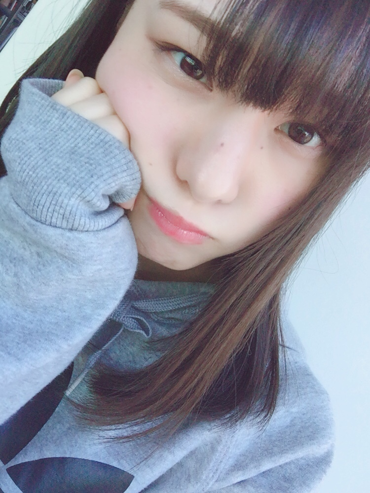
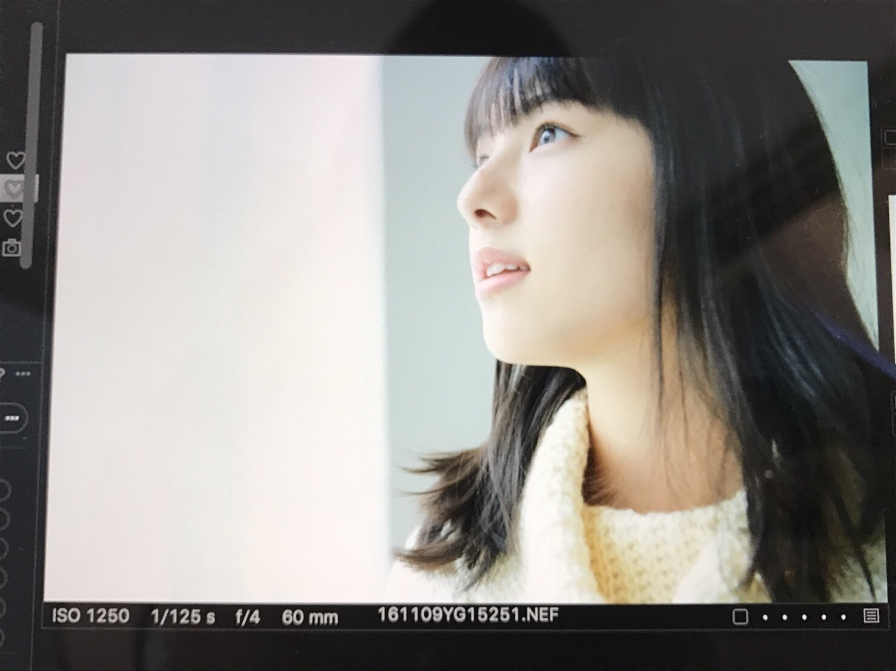
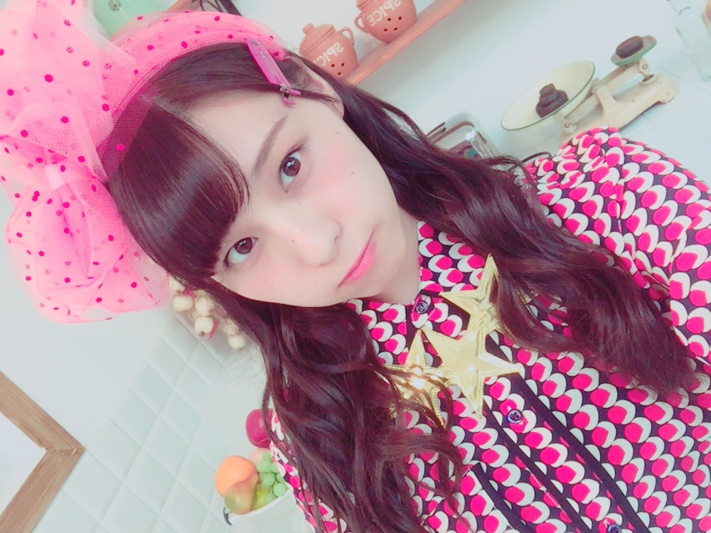
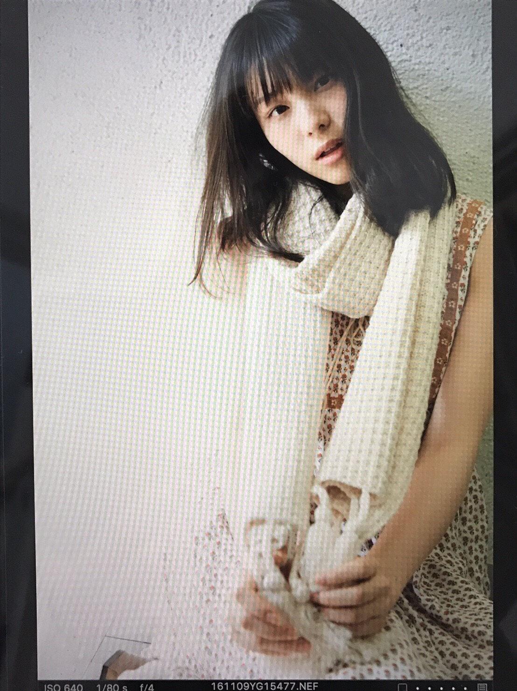
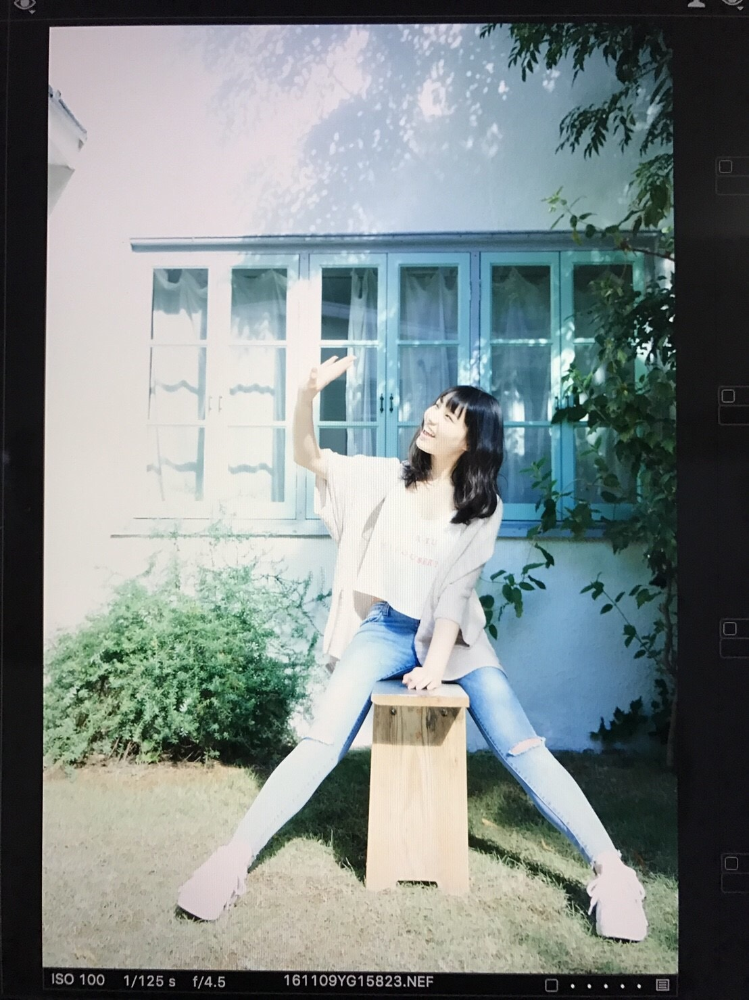

| 2016/12 05 Mon | 素敵っぽい、っぽい。_(．．*)vol.144 |
みなさんこんばんはー！
相楽伊織です！

むぅ
昨日はM-1グランプリでしたね！！
皆さん、観ましたー？？
優勝の銀シャリさん
本当におめでとうございます！
全組、とっても面白かったです(｡> <｡)！
個人的には
和牛さんのネタが好きでした！！
また劇場に行きたくなった。。。♡
お笑いナタリーさんで
決勝出場組予想で上げた方も
敗者復活を含め3組当たったので
それも嬉しかったなぁヾ(＠⌒ー⌒＠)ノ
久しぶりに芸人さんのネタを見て
大満足でした♡♡
来年も楽しみです～♡♡

この前みり愛と
お仕事終わりにイルミネーション見て
今年はどこか
イルミネーションの名所に
行きたいなと思ったのヽ(*^^*)ノ
都内で有名な所とか
オススメありますかー？
ちなみにその時
東京タワーにハートが浮かんでるのは
見たんだー♡
どこかいい所あったら
教えて下さい(^^)

そして、
7日、9日はアンダーライブ！！
なんか今日起きた時から
ずっとソワソワしてて落ち着かないんです(^^;
なんでかなぁ、、
当日は皆さんと一緒に
楽しめるライブが出来たらいいな♪♪
水曜日は寒いみたいなので
しっかり防寒対策をしてきて下さい！
熱くなったら
脱げばいいんだし！
私のサイリウムカラーは
オレンジ×黄緑です！
にんじんカラーだよ(*^^)v
よろしくね♪♪
 ヤングガンガン 発売中
ヤングガンガン 発売中
(飛鳥ちゃん)

smart 発売中
(まひろさん、蘭世)
乃木坂46×週刊プレイボーイ 発売中
楽天SHOWTIME 乃木坂ゴルフ倶楽部
劇場アニメーション
「好きになるその瞬間を。～告白実行委員会～」のエンディング主題歌が
HoneyWorks meets さゆりんご軍団 + 真夏さんリスペクト軍団 from 乃木坂46「大嫌いなはずだった。」に決定しました！
12/7からネット配信がスタートします！
爽やかで歌詞がとても可愛いくて
これぞ青春！って感じの曲になってます♡
聴いてほしいです(^-^)/

よろしくお願いしますm(_ _)m
今回のブログ
自撮り写真が少なくて
オフショットばかりですみません(><)
i o r i .

コメント(298)
2016/12/05 21:06